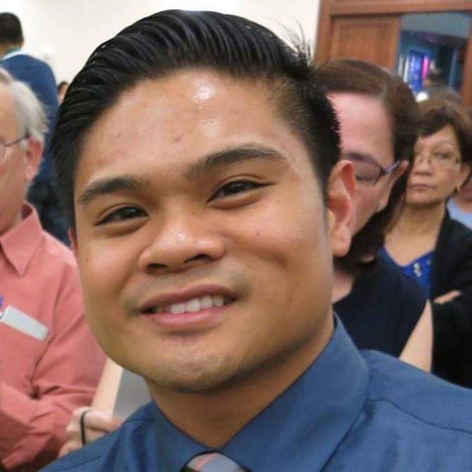
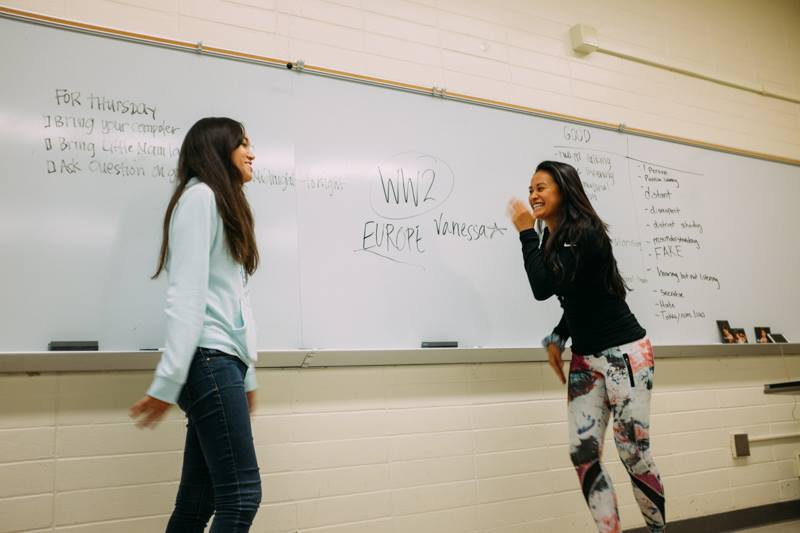
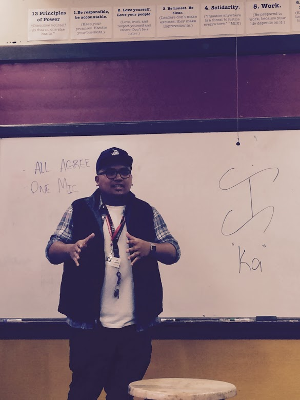
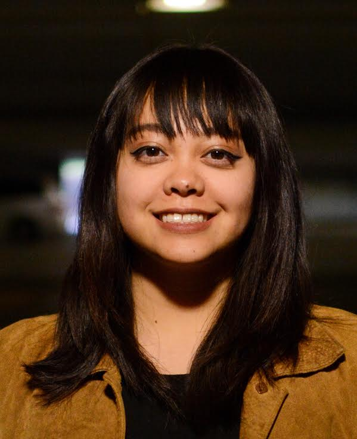
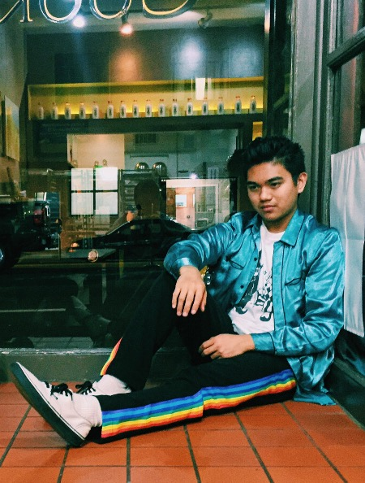
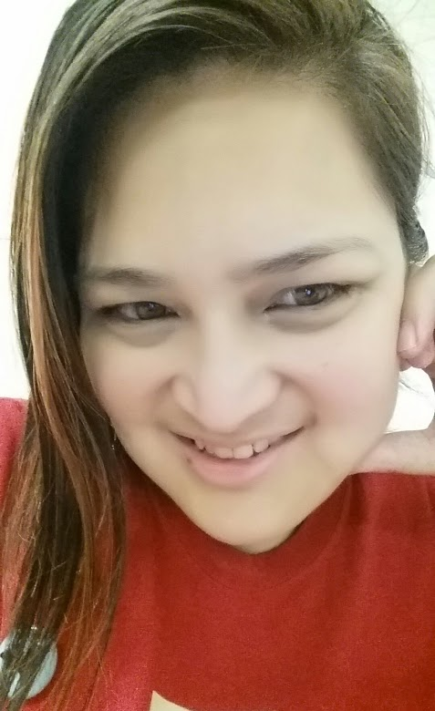

Gender and Sexuality
By: Rodel Sajor
Racial Tension
This is our Legacy that we must carry , obey and follow the roles that our elders have inherited for many years.
The stereotypes of Filipino women are usually stay home moms that clean the whole house the whole day. They would have the labor of gardening in the backyard. The role of women are the caring mothers that wake up the children early morning to prepare for school. The children are at school and they are expected to have something to eat once they come home. In the other hand the stereotype of the Filipino man is known as the hard worker that spends hours and hours to make money for the whole family. According the difference of dating, marriage, education and in the workforce is that the Man is considered the one that makes the money so therefore is the one with full power and takes control in the family. This is the brief explanation of how Legacy is used in this case. This is a common tradition that has been followed and inherited throughout many generations. Once the children are old enough to raise a family they are known to also follow the footsteps that the parents have shown to them as they grew up either they are citizens of the Philippines or in the united states it would be common better yet identical to their routines.
C.A.R.
C : The stereotypes between Filipino Men and Women in a Filipino Family
A: Legacy would be one of the L's that fits well to this concept because these are roles of most families and it has become a unspoken tradition.
R: Not only that I see my own family with the gender roles but I have noticed in my Uncles and Aunts carrying the Legacy of the uniformed roles of a Male and Female as being parents to their kids.
Sources:
Gender and Sexuality 101: Learn before you discriminate
Sexual orientation, gender identity a hot topic on Filipino university campuses
Gender Roles in the Philippines
The Typical Filipino Family
By: Cy Vojak
Masculinity ideology is defined as “ an individual’s internalization of cultural belief systems and attitudes toward masculinity and men’s roles” labor workers as well as live in the filthiest conditions, regardless of being in Hawai’i or U.S. mainland.
Given the definition, masculinity ideology varies as a function of differences in social, historical, political and cultural context.
As I grew up every Saturday my parents would make me do chores outside in the yard. So having three sisters they would be inside basically the entire time cleaning, bedrooms, bathrooms etc.… It was a little different for me; I would be outside with my father doing yard work. From trimming trees, to chopping down trees for firewood. My usual chore was to mow the lawn and don’t let me forget my personal favorite pulling weeds. I always wondered why it was like that, since I was a man I was outside doing hard labor. My sisters did a little weeding but I majority of the time was always outside doing hard work with my dad.
In terms of masculinity ideology in the Philippines they have a prevailing theme of Filipino men are expected to be the providers and the “father of the home”.
By: Carla Grace
My research consists of exploring the concept of national identity in Philippine cinema and television. The articles suggest Spanish colonization and American neocolozation as the main influences on contemporary media representation of the Filipino/a identity. Examples include stereotypes and archetypes represent the colonialist lens through which Filipino people perceive and perform themselves according to gender and sexuality.
By: Justin Redondiez
male vs man
The concept:
behind masculinity was enrooted in the culture that one has been brought up in and the system that reinforces that. For Filipinos and Filipino Americans there is this stigma of traditional machismo that make them believe that they must portray the standard of masculinity or they are seen as someone not manly. It’s believed that men must show that they are haligi ng tahanan (cornerstone of the home) and padre de pamilya (father of the family). This concept has been conditioned into the patriarchal society. Men have been expected to have validity towards their masculinity. The tests ran mostly gave the general consensus of males having to be the “man of the house” which would mean having to take responsibility of being in charge and will have to fill all the roles of the “typical man”. However, the article states that the sampling they took was from a certain age group. The study itself should be done again in this point of time with a larger spectrum of sampling to show the differences between the two studies.
Application:
The concept of legacy is a contributing factor of the heteronormative patriarchal mindset these Filipinos have to continue the stigma of being the “man of the house”. These traditional values are passed down from generation to generation giving the notion that it is something their parents have done and their parents have done before them which produces the notion of continuing down the same linear path thinking it will hopefully lead them to a successful future. However, within just a couple of years that the study has been conducted the general consensus has changed. Majority of Filipinos no longer believe that the responsibility should fall solely on the male alone. Being apart of a family is a collective effort and it takes everyone apart of the family to help pathe their own way to being happy. With the slow transformation of incorporating collectivism into family life, we start to build new legacies within the FIlipin@ communities.
Reflection:
Being raised in one of these families that endorse the Filipino gender role of men had always been a huge factor in my thoughts of responsibility and legacy. I had always challenged the standards that my grandparents had expected from me as a FIlipino American male. They had always implanted the thought of having to be the “man of the house”. However, I had always thought these concepts to be institutionalized mostly set by the Eurocentric norms that are set through media. Also, I feel that though the study had a good sample of Filipinos, not all voices were heard as the research was being conducted, it seemed to have left out a community of younger and older Filipinos, as well as LGBTQ individuals. The new Eurocentric ideals of a man just doesn’t cut it, there’s more to identifying as a man than the amount of responsibility you have.
Source:
FILIPINO MEN’S ROLES AND THEIR CORRELATES
By: Kristina Liwanag
Concept: Intersectionality addressed in Filipina/o Literature.
In the telling of our his/her/our stories as Filipina/o Americans, we must understand that our culture is complex and the Filipino/a American and Filipino/a people have other various overlapping experiences and identities. Within Filipino/a Diasporic literature, starting in the 1990s with Jessica Hagadorn’s Dogeaters, many more novels started to address intersectionality while also commemorating the historic events of our past that shape the current Filipino/as and Fil-Ams today. Gender and sexuality begin to be addressed in historic novels and provide us with another lens/narrative that inform us on how inter-sectional identities of a character have impact on how differently they affected during colonialism, the Philippine Revolution, imperialism, immigration, Martial Law and more.
Application: Throughout the book Beyond the Nation: Diasporic Filipino Literature and Queer Reading, Ponce uses literary analysis and connects the language in certain texts to multiple aspects and values of Filipino/a culture. For example, he discusses how Bino A Realuyo’s The Umbrella Country and R.Zamora Linmark’s Rolling the R’s, have similar themes and scenes where patriarchy is the ideological oppressive force that affects queer or transgender youth, who are also experiencing interpersonal oppression with peers and family. Moreover, in an analysis of a scene between two characters in Rolling the R’s, Ponce brings intersectionality to the attention of the readers , “This moment of discord-- Vicente categorically declares “I’m not like you” when Edgar asserts “you just one ‘nother fag like me” (134)-- complicates the notion that “while you disparate ethnic affiliations of the immigrant adolescents who populate Linmark’s novella threaten to divide further their tenuous loyalties, its precisely sexuality-- an obsessive queer sexuality that permeates Rolling the R’s from beginning to end-- that binds them together as a social group,” (Ponce, 168). Here race and sexuality are parts of Vicente’s identity that are being addressed, Ponce is showing that his statement of “I’m not like you” complicates the idea that all queer youth are the same and are grouped together because his “ethnic affiliations” and backgrounds brings complexities to his queer identity too.
Reflection: My reflection of intersectionality and queerness in Filipino Diasporic Literature ties in with the contemporary L of Legacy. Through reading sections of this novel it was interesting to hear how there are counter-narratives within counter narratives. Filipino/a queer youth is not often represented in Literature and it is also still difficult to find books on Filipina Queer women as the protagonist in Literature, but they do exist. Representation matters in Literature which can tend to feel so Euro-centric in our English or Literature classes. As an English Major myself, I have been feeling this way since taking an ethnic studies class and have viewed my schooling experiences through a different lens. However, I still wish to be an English Literature teacher because I hope to discuss novels that represent my students and myself and many of the various layers of our identity. .
Source:
Beyond the Nation: Diasporic Filipino Literature and Queer Reading, By Martin-Joseph Ponce
By: Charlene Halal
Concepts:
1.Body Image
2.Lifestyle
Applications:
Body image – The first things that generally come to mind when we think of body image are how someone is considered to be “fat”, “skinny”, “tall”, or “short”. Something that we fail to recognize about body image are the body parts itself and the internal aspect or parts of the body that are not seen in public. As we all know, men and women have different private parts which include a penis and a vagina. To start off with men, they are seen as more sexually aggressive, more sexually active, and more possessive specifically over a woman’s body. The penis and testicles are exposed and kind of attached but is on the outside of the body. Because the penis is located on the outside, there is another stereotype about men and their sex life which is that sex is not as personal to men as it is to women and that they can even engage in this kind of activity with strangers. On the other hand, a woman’s vagina is more hidden and turned inwards. The location of a woman’s vagina makes us perceive her as someone more passive, more intimate, and less likely to hook up with a stranger or give herself away easily. So body image doesn’t always have to be related to a person’s physical appearance, it could be connected with the parts of the body that are differentiated between men and women.
Lifestyle – Some common stereotypes that are presented about men and women are that men are physically stronger, they are meant to work for businesses, armies, and head the family while women are supposed to do the housework and activities that are not so strenuous. We also have the stereotypes that men are less emotional or that they are better with controlling or hiding their emotions while women are emotionally dependent. Men are usually raised to start doing hard labor, especially those who come from poor families, and women are raised to learn how to cook and clean at a young age. This projects the idea that only men can perform certain tasks and work certain jobs and also since a woman is the only gender that has the capability of bearing and giving birth to a child, it projects the idea that their role in life is to take care of the children and her family. According to Eviota, during the Spanish colonization, women were active in helping with the agriculture and men participated in helping around with duties in the house. This statement goes to show that for Filipinos, both men and women do tasks to get work done regardless of what type of work it is (21). Eviota also mentions that “In Manila, the incipient working class, though largely male, included young women who worked in the tobacco factories” (22).
Reflection:
My reflection for body image and lifestyle ties in with the “L” Love in the form of self-love versus self-hate. The responsibilities and struggles that women have to go through and the functions that their bodies are meant to perform make it hard for some of us to be proud of how we were made and appreciate the beauty and nature of own bodies. As we all know by now, women are the only ones who can get pregnant and women are the only ones who have to undergo menstruation. I, personally think it is unfair that men do not have to go through the process of carrying a human being inside of you for nine whole months and they do not have to bleed for a whole week every month. Men have no right to ask us why we get mood swings or why we complain because I feel that if they had to experience the same thing women did, they would do the same thing. I focused more on the decolonization aspect of Filipino/a American identities and how everyone is now able to feel comfortable being whatever gender they want to be. Our LGBTQ community has been growing ever since gay marriage became legal and I think it is a great thing for those people to be accepted and feel as if they are equal. Being open about their sexuality is very important in my opinion and this also has a lot to do with self-love. In my family, I have a lot of male cousins and uncles who are gay and have come out to the family and they are all treated the same way and shown the same amount of love as everyone else.
Source:
Sex and gender in the Philippine Society a discussion of issues
By: Mark Baltazar
She came, she saw, she conquered. Veni, Vidi, Vici.
Concept: Women in the Philippines are very powerful in society. Education levels in the 1900's were higher for women than for men. Filipino women have been senators, cabinet officers, head of major business corporations and etc. Accordingly to many observers, men often regulated the household, which meant women often carried a double burden. Women in power is starting to be more common in Asia. According to an article called "3 Pinays on Forbes power list" they state 3 different women in power that are Filipinas. Teresita Sy-Coson, vice chairman of SM Investments and chairman of BDO Universal Bank, was included in the list for the fourth year in a row since its inception. Helen Yuchengco-Dee is a 70 year old woman who made it to the Forbes list because of how she is the chairman of the Rizal Commercial banking corp. Zenaida Rustia-Tantoco also made the cut by being the chairman and executive officer of the SSI group/ Rustan’s Commercial as her increased revenue debut in the Philippine stock exchange last year. We have so many women in power in the P.I, which shows us that women can be leaders everywhere else in the world. Philippines had two women presidents, and US never had one. Filipina leadership is growing at a fast pace, the world has to catch up.
Application: The L that represent this topic is Liberty. Filipina leadership shows a great example of where we should end up in society. We have Filipina households that has the women in charge. Throughout time, women's rights have been getting more and more strong. Eventually, there would be more women leaders around the world and Philippines is a great example.
Reflection: Women in power relates to my life a lot. First, my mother is pretty much the leader of the household. She is the one who pays the bills, goes to work, takes care of the family. My father does that too, but in a lower degree. I've noticed as well that a lot of my aunties are the leaders of their house as well. I'm not sure if my mother was the prime example or not. We also have a great teacher in Professor Allison that is a great leader. Throughout my years of living, women have been a big impact on my life because of the leadership that they teach me.
Citation:
3 Pinays on Forbes power women list
THE ROLE AND STATUS WOMEN
By: Mariel Sancio
C - In most societies, gender preferences occur with their parents. We see that because of the gender, parents automatically teach traditions and beliefs based on their gender. In the Philippines, there is a blend of societal influence from the East and West. Since the Spanish and American colonization, those influences changed the beliefs, women social status, labor requirements in society.
A – In the precolonial period, the men and women would work together with labor. Their reading and writing system was available to both genders. Women were allowed the same liberty as men. Married women have their independence and dependence with their husband. There was no particular preference when it comes to the gender towards their child. Colonial rulers did eventually influence the lifestyle and belief towards gender. Because of Catholic education, during the Spanish colonization, it was their beliefs of men being superior converted and taught society. Men were taught law, medicine, and theory and women were taught home economics and social manners. Agriculture work was for men and made it difficult for women to find work outside their homes. Catholicism has also changed the way if affected the view of sex and virginity. Women were expected to be pure and loyal, however it was acceptable for men to have affairs. The women’s role in the family became limited. Son and daughters inherit these beliefs. During American colonization, it bought public education and again influenced their views of gender preferences. This made women no longer inferior to men and gave them the opportunity to enter medicine, law, and dentistry. Women took this opportunity to be involved in government and industrialization. This made men and women work together. Wives are also taking apart of decision making in the family. Spanish and American colonization have affected economic conditions and the country’s growth. Filipinos as a whole do not have a preference towards gender. What is important to parents is their child’s education and their income for the family. In marriage, both men and women work together with their financial income to help their family and and their parents. The Philippines there is no preference to follow east or west traditions, when in fact it is influenced based on the historical events.
R – Being raised by my grandparents on my mother’s side and parents, I can see the change in beliefs when raising children based on their gender. My grandparents were born in the 1920’s and raised 8 children. My grandmother was a stay at home mother while my grandfather worked in the hospital. Having my mother and her siblings attend school, my grandmother taught her daughters how to be a woman and a wife. My mother had her views on women manners and how women should act. Being raised in America, there was definitely a culture difference between her Filipino beliefs and American beliefs. There were certain expectations of what being a woman means and what a woman should do. For instance, a woman must be clean and organized and must be in charge of the house rules. If my mom catches me with a messy room, she said that it is not lady like to have a messy room. I understand the influences where my mother is coming from but I think it is important to find balances of the duties regarding gender. I am fortunate that I live in a society fighting to equal rights for both gender and sexuality.
By: AJ Cuyson
Concept:
Prejudice and discrimination amongst the LGBTQ community is an on-going issue in the Filipin@ community. Gender and sexuality in the context of “traditional” or “conservative” Filipin@ culture and values are derived from a society conditioned into a heteronormative-dominant nature. Though discrimination and prejudice towards the LGBTQ community is at an unfortunate global and universal issue, society’s aggressors of the notion remain above the surface and fail to realize how various micro to macro-aggressions in the context of the LGBTQ discrimination can be internalized, thus affecting mental health. The article Self-Stigma, Self-Concept Clarity, and Mental Health Status of Filipin@ LGBTQ Individuals bases its purpose and research on the effects of stigmas placed upon the Filipin@ LGBTQ community in correlation to the notions of self-stigma (internalizing prejudice, discrimination, etc,) self-concept clarity, and overall mental health.
Application:
The concept of love can be applied to the topics of self-stigma, self-concept clarity, and mental health in conjunction with the Filipin@ LGBTQ community. Upon looking at the trajectory of the concept of love in Filipin@ history, it has since changed from a notion focusing on the love for oneself, communal and non-conditional love for others, and a society looking at love in the lens of a spectrum rather than a binary, to the contemporary paradigm of heteronormativity. Essentially, keeping in mind the history of colonization by countries practicing Western norms, have transformed the Filipin@ and Filipin@ American’s community of who we love, why we love, and how we love.
Reflection:
“Conservative” and “traditional” Filipin@ familial and societal morals and values, in my experience, have always been less accepting of anything that is out of the internalized notion of heteronormativity. Many of these prejudices and discriminatory factors deriving from different mediums from, institutional to interpersonal, vastly affect the mental health of those being targeted. LGBTQ individuals in my life, whether it be friends or family, have always been outspoken and critical of the obstacles and struggles that they face as someone who identifies queer. To combat the notion of internalizing society’s stigmas against the community, I feel that reclaiming the indigenous beliefs and values of love (who we love, why we love, how we love) is both highly necessary and crucial.
By: Natassja Mullen
Concept:
Traditionally, the role of a Filipino man is like a diamond, multiple faceted. Sense of responsibility; being responsible and having a sense of accountability for one’s life through working hard, planning for the future, and following through with commitments. Family orientedness; a more traditional family orientation, being a paternalistic provider and protector of one’s family. Strength; men are expected to display physical and emotional strength, such as being able to endure pain, be aggressive, and have the ability to defend their honor. Sense of community; men are supposed to take the initiative in helping others, as well as maintain a spirit of pakikisama (being able to get along well with others) and kapwa (oneness) with others. Bakla refers to an effeminate male; a male having feminine physical characteristics, such as a small or frail body; or a cross-dressing male. Men who are bakla are viewed to be less like a man and more like a woman and are often referred to as having a female heart or being a womanly hearted man. Masculine gender role stress happens when men feel that they are unable to conform to male role expectations or are required to act in a way that violates traditional male gender roles.
Application:
The L of Love is what represents this concept the most; self-love most importantly. As stated above, the Filipino man is expected to be the backbone of not only his family but also his community. When sexuality comes into play, that is where the vision of the Filipino man is skewed, causing psychological distress for the individual. On one hand, he knows what is expected of him and on the other, he knows what feels right to him.
Reflection:
Growing up close to Downtown San Francisco, I was exposed to many people of different ethnicities, cultures, religious beliefs, and sexualities. I recall talking to some of my friends who identified as queer and had yet to come out to their families. Among the fears that I heard, the ones that stuck out the most for me was their fear of being kicked out of their home and more so, being disowned by their family. This never really sat well with me because I have always believed that love is love, is love. I think this is part of the reason why psychology and human sexuality studies has always appealed to me; I want to break the stigma of homosexuality in the Filipino community.
Writers
-

I am a Music Major and I am currently a student at San Francisco State University. I play guitar, piano, and I also sing. I am wanting to pursue to be a continueing music performer and eventually become a music teacher to teach a choir, a school band, and just continuously be involved in music.
-
I am 21 years old I am a student athlete. I am from San Diego, California. I play baseball for San Francisco state. I have a pretty big family, I am the youngest of four children. I have three older sisters.
-

My name is Mark Clifford Baltazar, but you can call me Mark. 22 years old and this was my first semester going to SFSU. I was born and raised in SF. I'm Filipino American and I'm very proud of my culture. I am still looking forward to my future and the new things I'm going to experience.
-
Hi my name is Charlene Halal. I am a Junior at San Francisco State University. Originally wanted to major in Nursing but switching to Health Education. I plan to be a health educator to the youth and my emphasis is community building.
-

Hello everyone! My name is Kristina Liwanag and I am a student in my last semester at SFSU, pursuing a B.A. in English Education with an emphasis in Literature. I am also a teacher at Burton High School through Pin@y Educational Partnerships (PEP) teaching Ethnic Studies through the lens of the Filipinx American Experience.
-

Hello! My name is Adrian James Dinglasan Cuyson. I was born on December 13th, 1992 in Oakland, California. I currently live in Daly City, California and attending San Francisco State University, pursuing a B.A. in Asian American Studies. I am also a part of an organization called Pin@y Educational Partnerships of San Francisco, headed by Dr. Allyson Tintiangco-Cubales, Dr. Roderick Daus-Magbual, and Dr. Arlene Daus-Magbual. I currently teach 2nd period Asian American History at Balboa High School for the organization. My ultimate academic and career goals are to receive a B.A. in Asian American Studies, acquire teaching credentials, attend graduate school for an M.A. in either Education or Asian American Studies, and ultimately become a teacher.
-

Hello! My name is Mariel Sancio. I am a Dance major in San Francisco State University. I moved to San Francisco from Los Angeles. I will be graduating in the Spring and I plan to audition in to dance companies in the Bay Area. Eventually, I plan to get my teaching credential in dance to teach children.
-

Hello, My name is Carla Grace Fajardo and I will be graduating from San Francisco State University with a BA in Cinema. I am currently part of Pilipino American Collegiate Endeavors and Barangay Dance Company. I plan to continue working with the Filipino-American community in the Bay Area and collaborate with artists to create and perform as a form of cultural activism.
-

What’s up ya’ll? My name is Justin Cedric Redondiez. I’m currently an Asian American Studies major at San Francisco State University. I’m 20 years old grew up in Los Angeles, and moved to The Bay for college. I hope to be graduating soon-ish. I’m really into fashion and hope to be cutting and sewing my own clothing soon!
-

my name is Natassja. I am a Filipina senior majoring in Psychology and minoring in Human Sexuality Studies at San Francisco State University. I’ll be graduating in Spring and I plan on getting my Master’s Degree in Human Sexuality Studies and then eventually getting my PsyD